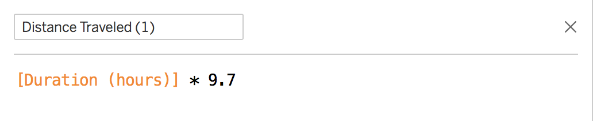
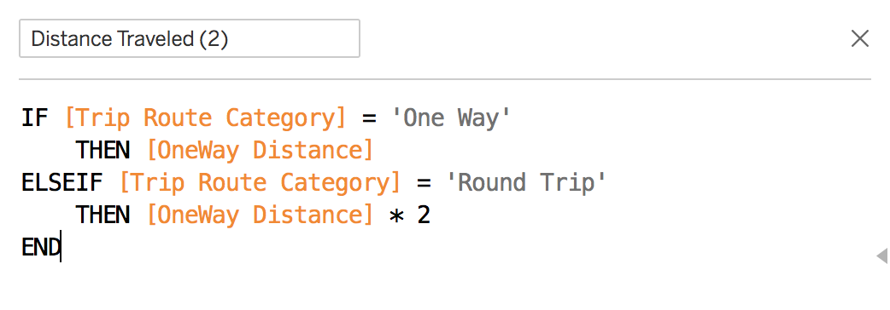
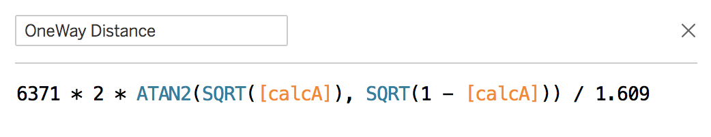
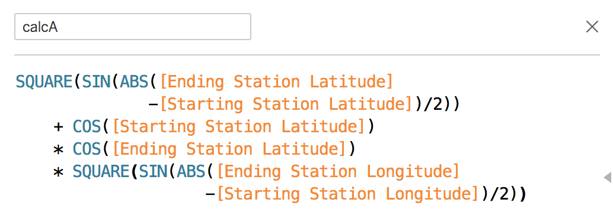

Method 1: Using Average Speeds
Finding the average distance traveled is relatively simple. We don't need to worry about
whether or not a trip was one-way or round-trip. Rather, we just need to know the duration of the bike
was used (in hours), multiplied by the
average bike speed, which was found to be 9.7 mph. Using Tableau, we
can then create a new field that's a function of the Duration parameter multiplied by 9.7. Then, we plot
that average of all of those values. The function is defined as below:

The average distance value is based on the assumption that riders are biking the entire duration time,
when in reality, we know that bikers most likely aren't biking that entire time (probably stopping to walk, take
pictures, eat, etc.). The density point plotted on this chart has a "cloud" around the point to represent the standard
deviation of the average distance found, which was calculated as the square root of the squares of standard deviations
used to perform the calculations as defined by common
error propagation practices. Thus, the average distance traveled using Method 1 was found to
be 4.1907 +/- 1.6941 miles.
Method 2: Using Coordinates
With this method, we used the
haversine formula to find the distance traveled between two GPS coordinates. An important assumption we make here is that we
are calculating straight line distances between coordinates; To simplify the approximation for average distance travels,
we'll just assume that trips are made in straight lines. Moving on, we accounted
for the fact that for one-way rides, the distance traveled would be the calculated distance itself, but for round-trip rides,
the distance traveled would result in 0, since the start and end coordinates were the same. So for round-trip rides,
we simply use the distance traveled by average bike speed as found in method 1. This calculation is summarized as
follows:

where the [OneWay Distance] field was calculated as below:

where, lastly, the [calcA] field (the variable A in the haversine formula) was found as so:

Note that in the calculation for [OneWay Distance], the 6371 represents the radius of the Earth
in kilometers. Further note that the entire calculation was divided by 1.609 since we want to convert
our kilometer output to miles. Putting this all together and plotting the average of all these
calculations, we find that using Method 2, the average distance traveled
is 5.00416 +/- 0.0000141 miles!